One desktop app for every coding agent.쓰던 코딩 에이전트를 하나의 앱에서.
OOP wraps the agent CLIs you already have, Codex, Claude Code, Cursor, OpenCode and
more, in one chat-style workspace on your own computer. Bring your own subscriptions.
Optionally let several models share a task as a Crew.OOP는 이미 쓰고 있는 Codex, Claude Code, Cursor, OpenCode 같은 에이전트 CLI를 내
컴퓨터의 채팅형 작업 공간 하나로 묶어 줍니다. 구독은 직접 준비하고, 원하면 여러 모델이
한 작업을 나눠 맡는 Crew도 쓸 수 있습니다.
Early release. macOS Apple Silicon is the tested target; Windows is
experimental.초기 릴리스입니다. macOS Apple Silicon이 검증 대상이고, Windows는 실험
단계입니다.
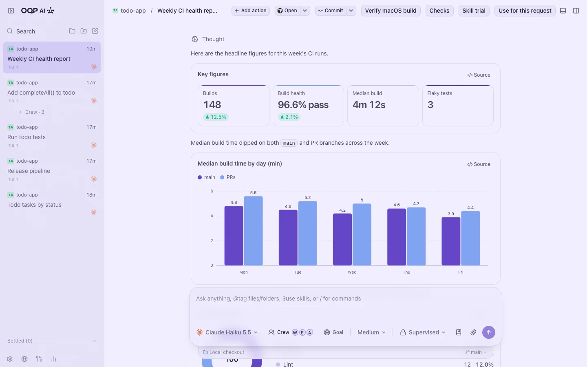
Real screen recording실제 화면 녹화
A screen recording of the desktop app on a demo project, not a mockup. It plays
while it is on screen.데모 프로젝트에서 실행한 데스크톱 앱의 화면 녹화이며 목업이 아닙니다. 화면에 보이는
동안 재생됩니다.
Watch the 30-second tour30초 투어 보기
Motion tour built from real recordings실제 녹화 화면으로 만든 모션 투어
4permission modes, from Supervised to Full access권한 모드: Supervised부터 Full access까지
4ways to use it: desktop app, browser, phone, terminal사용 방법: 데스크톱 앱, 브라우저, 휴대폰, 터미널
0OOP accounts or OOP servers; your code stays on your machineOOP 계정·OOP 서버; 코드는 내 컴퓨터에만 남습니다
01 · What it is소개
Agents are good. Juggling them is not.에이전트는 훌륭합니다. 여러 개를 오가는 일이 문제죠.
Each coding agent lives in its own terminal or app, with its own login, history and
approval prompts. OOP puts them side by side with one diff, one terminal and one
approval flow.코딩 에이전트마다 터미널이나 앱, 로그인, 기록, 승인 프롬프트가 따로 있습니다. OOP는
이들을 나란히 놓고 diff, 터미널, 승인 흐름을 하나로 맞춥니다.
Not a hosted service. OOP runs on your computer. Projects, provider
logins and agent work stay there. There is no OOP account and no OOP server.호스팅 서비스가 아닙니다. OOP는 내 컴퓨터에서 실행됩니다. 프로젝트,
provider 로그인, 에이전트 작업이 모두 그곳에 남고, OOP 계정도 OOP 서버도
없습니다.
Built on T3 Code. OOP is a fork of
T3 Code by T3 Tools Inc. (MIT),
based on upstream v0.0.44. Almost all of the foundation is their work.T3 Code 기반입니다. OOP는 T3 Tools Inc.의
T3 Code(MIT)를 포크한 프로젝트이며
업스트림 v0.0.44를 기반으로 합니다. 기반 코드의 거의 전부가 T3 Code 팀의
작업물입니다.
New in 0.0.1550.0.155 새 기능Released · 2026-11-10정식 출시 · 2026-11-10
Charts, redrawn.차트가 새로 그려집니다.
In 0.0.155 every chart an agent draws in chat gets a new renderer: fourteen chart
kinds in eight colours that stay easy to tell apart, the same colours in the same
order in the terminal, and flowcharts with cleaner lines.0.0.155에서는 에이전트가 대화창에 그리는 차트가 새 렌더러로 바뀝니다. 14가지 차트를
서로 구분하기 쉬운 여덟 가지 색으로 그리고, 터미널에서도 같은 색을 같은 순서로 쓰며,
흐름도는 더 깔끔한 선으로 그립니다.
Illustrations of each chart kind, drawn for this page.각 차트 종류를 이 페이지용으로 그린 예시입니다.
Same colours, desktop and terminal데스크톱과 터미널이 같은 색으로
Desktop app데스크톱 앱
Edits편집Checks검사Reviews검토
Terminal터미널
oop
oop › charts
Edits편집████████████ 12
Checks검사███████ 7
Reviews검토████ 4
1
2
3
4
5
6
7
8
Each terminal theme carries the same eight colours and folds them to 256 or 16
colours, or none, when the terminal shows fewer. A one-point chart now draws as a bar,
and an all-zero chart says so.터미널 테마마다 같은 여덟 가지 색을 갖고, 터미널이 표현하는 색이 적으면
256색·16색이나 흑백으로 맞춥니다. 값이 하나뿐인 차트는 막대로, 값이 모두 0인 차트는
그렇다는 안내와 함께 그립니다.
0.0.155Diagrams다이어그램
Cleaner flowcharts더 깔끔한 흐름도
Flowcharts in chat use thin lines, right-angle connectors that route around boxes,
and a tint per level. For architecture, sequence or data-flow diagrams, the agent
uses the diagram-design skill when it is installed.대화창 흐름도가 가는 선, 상자를 피해 꺾이는 직각 연결선, 단계별 색으로 그려집니다.
아키텍처·시퀀스·데이터 흐름처럼 흐름도로 담기 어려운 그림은 diagram-design 스킬이
설치돼 있으면 그 스킬로 그립니다.
0.0.155Commands명령
A grep that finds nothing is not a failure아무것도 못 찾은 grep은 실패가 아닙니다
A query such as grep, test or which that
exits 1 with no error output now shows as a muted exit 1, not a failed
command, in the desktop app and the terminal.grep, test, which처럼 결과가 없을 때 exit
1로 끝나는 명령이 오류 출력 없이 끝나면, 데스크톱 앱과 터미널 모두 실패가 아니라
흐린 exit 1로 표시합니다.
0.0.155Install설치
The installer checks your setup설치가 끝나면 바로 점검
The terminal-only installer ends by running oop doctor once, so you
see which providers are ready and what is still missing.터미널 전용 설치 스크립트가 마지막에 oop doctor를 한 번 실행해, 준비된
provider와 아직 빠진 것을 바로 보여 줍니다.
oop doctor
0.0.155Security보안
Safer on shared machines공유 컴퓨터에서도 더 안전하게
Files OOP writes in a project no longer follow a symlink outside the project
folder, the folder holding your chat history is readable only by your user on macOS
and Linux, and crew audits block changes that open a security hole.OOP가 프로젝트에 쓰는 파일이 심볼릭 링크를 따라 프로젝트 폴더 밖으로 나가지 않고,
대화 기록이 담긴 폴더는 macOS·Linux에서 본인 계정만 읽을 수 있으며, crew 감사는 보안
구멍을 여는 변경을 막습니다.
0.0.155Crew
The crew wastes fewer turnscrew가 헛도는 일이 줄었습니다
A Claude Code lead now waits up to five minutes per check instead of 50 seconds, a
task that cites a missing path gets a warning up front, and members re-read a file
right before editing it.Claude Code가 이끄는 crew는 결과를 한 번에 최대 5분까지 기다리고(이전 50초), 없는
경로를 가리키는 작업은 맡길 때 바로 경고를 받으며, 멤버는 파일을 고치기 직전에 다시
읽습니다.
0.0.153–0.0.155 · What's new새 소식
Shipped since the last update.지난 업데이트 이후 새로 들어온 것들.
The last three releases in short. Every release also lists its highlights in Settings
→ What's new.최근 세 릴리스의 요약입니다. 각 릴리스의 하이라이트는 설정 → 새로운 기능에서도 볼 수
있습니다.
0.0.155Charts차트
Charts in chat get a new renderer대화창 차트가 새 렌더러로 바뀝니다
Fourteen chart kinds in eight easy-to-tell-apart colours, and the terminal app uses
the same colours in the same order. Flowcharts use thin lines and connectors that
route around boxes. A thread that rose to the top of the sidebar while working stays
there after it finishes. Commands that end with exit 1 and no error output, such as
grep finding nothing, no longer show as failed.14가지 차트를 구분하기 쉬운 여덟 가지 색으로 그리고, 터미널 앱도 같은 색을 같은
순서로 씁니다. 흐름도가 가는 선과 상자를 피해 꺾이는 연결선으로 그려집니다.
작업하면서 사이드바 맨 위로 올라온 스레드가 작업이 끝난 뒤에도 그 자리에 남습니다.
grep이 아무것도 찾지 못한 경우처럼 오류 출력 없이 exit 1로 끝난 명령을 더 이상
실패로 표시하지 않습니다.
0.0.153Crew
Set the crew oncecrew는 한 번만 설정
Settings → General → Crew sets the crew and fallback models that every new chat
starts with, instead of picking them again in each composer.설정 → 일반 → Crew에서 새 대화가 기본으로 쓸 crew와 fallback 모델을 정해 둘 수
있습니다. 입력창에서 매번 다시 고르지 않아도 됩니다.
Settings → General → Crew
0.0.153Crew
The crew repeats lesscrew가 같은 일을 덜 반복합니다
A repeated task gets the earlier attempt's outcome, a model that refused twice sits
out for a day, and results from tasks handed out together arrive in one
follow-up.다시 맡긴 작업에는 이전 시도의 결과가 전달되고, 두 번 거부한 모델은 하루 쉬며, 함께
맡긴 작업의 결과는 한 번에 도착합니다.
0.0.154Crew
Crew reports you can trust믿을 수 있는 crew 보고
An answer without a status counts as unfinished, dropped results show in the
decision log, and a check with a wrong path says the file does not exist instead of
passing.상태 표시가 없는 응답은 미완료로 계산하고, 버려진 결과는 결정 로그에 남으며, 경로가
틀린 확인은 통과가 아니라 파일이 없다고 알려 줍니다.
0.0.154Sidebar사이드바
Running threads first, and a popup when one ends진행 중인 스레드가 먼저, 끝나면 팝업
Threads that are working or waiting for your approval or input lead the sidebar,
and a small popup in the top-right corner tells you when a thread finishes, fails or
needs you, even if you were in another app.작업 중이거나 승인·입력을 기다리는 스레드가 사이드바 맨 위로 올라오고, 스레드가
끝나거나 실패하거나 확인이 필요하면 오른쪽 위에 작은 팝업이 뜹니다. 다른 앱을 보고
있었어도 돌아오면 보입니다.
Settings → General → Running threads first
0.0.153 · 0.0.154Recovery복구
Interrupted is not an error중단된 대화는 중단됨으로
A chat cut off by a server restart now reads as interrupted with a hint to
continue, not as an error. Desktop and the terminal app also do less background
work: settings and connections update on change instead of polling, and long chats
redraw with less copying.서버 재시작으로 끊긴 대화가 오류가 아니라 "중단됨"으로 표시되고, 이어서 진행하는
방법을 안내합니다. 데스크톱과 터미널 앱의 백그라운드 작업도 줄어, 설정과 연결은
주기적으로 확인하지 않고 바뀔 때만 갱신하며 긴 대화를 다시 그릴 때 복사도
줄었습니다.
02 · Key features주요 기능
Control, review and keep an eye on the work.제어하고, 검토하고, 작업을 지켜봅니다.
F1ProvidersProvider
Eight agents, one thread view여덟 가지 에이전트, 하나의 스레드 화면
Switch the provider and model per thread. Install, update and sign in to each CLI
from one page.스레드마다 provider와 모델을 바꿔 쓰고, 각 CLI의 설치·업데이트·로그인을 한
페이지에서 처리합니다.
Settings → Providers
F2Crew
Several models, one chat한 채팅, 여러 모델
A brain model plans and talks to you, workers and an expert do the work, and an
auditor reviews the result.총괄 brain 모델이 계획하고 대화하며, worker와 expert가 작업하고, auditor가 결과를
검토합니다.
Composer → Crew
F3Autonomy자율 실행
Thread goals스레드 목표
Describe what should be true when the chat is done. OOP keeps the thread going
until the goal is complete, blocked or stopped.채팅이 끝났을 때 참이어야 할 조건을 적어 두면, 목표가 완료·차단·중지될 때까지
스레드를 이어 갑니다.
Composer → Goal
F4Review검토
Diff panel with checkpoints체크포인트가 있는 diff 패널
Review what the agent changed and restore from a checkpoint if you do not like
it.에이전트가 바꾼 내용을 검토하고, 마음에 들지 않으면 체크포인트에서
복원합니다.
Right panel → Diff
F5Safety안전
Four permission modes네 가지 권한 모드
Supervised, Auto-accept edits, Auto or Full access, per thread. New threads default
to Full access; use Supervised for repos you do not trust.스레드마다 Supervised, Auto-accept edits, Auto, Full access 중에서 고릅니다. 새
스레드의 기본값은 Full access이니 믿기 어려운 저장소에는 Supervised를 쓰세요.
Composer · Settings → General
F6Remote원격
Steer from your phone휴대폰으로 지켜보고 조정
Pair a phone over your Wi-Fi, Tailscale, or a Cloudflare relay you deploy yourself.
The agents keep running on your computer.같은 Wi-Fi, Tailscale, 또는 직접 배포한 Cloudflare relay로 휴대폰을 페어링합니다.
에이전트는 계속 내 컴퓨터에서 실행됩니다.
Sidebar → Connect mobile
F7Cost비용
Usage page사용량 페이지
Token use, cache savings and estimated cost across providers. Estimates, not your
bill.provider 전체의 토큰 사용량, 캐시 절감, 추정 비용을 보여 줍니다. 실제 청구액이 아닌
추정치입니다.
Sidebar · mod+u
F8Visibility가시성
Workflows and agents워크플로와 에이전트
A live diagram of tool calls and subagents while the agent works.에이전트가 작업하는 동안 도구 호출과 서브에이전트를 실시간 다이어그램으로 보여
줍니다.
Right panel · mod+alt+w
F9Terminal터미널
The same threads in a terminal터미널에서 같은 스레드를
Run oop in a project folder. It shares threads with the desktop app
and also runs without it.프로젝트 폴더에서 oop을 실행하세요. 데스크톱 앱과 스레드를 공유하며,
앱 없이도 실행됩니다.
$ oop
How providers connectprovider가 연결되는 방식
Eight agent CLIs you already use: Codex, Claude Code, Cursor, Grok
Build, OpenCode, Antigravity, ZCode and MiniMax Code.이미 쓰고 있는 에이전트 CLI 여덟 가지: Codex, Claude Code, Cursor, Grok
Build, OpenCode, Antigravity, ZCode, MiniMax Code.
One workspace. They plug into the same thread view, diff and approval
flow.하나의 작업 공간. 같은 스레드 화면, diff, 승인 흐름에 연결됩니다.
Per thread you can switch the provider and model. Here two example
threads use two different providers.스레드마다 provider와 모델을 바꿀 수 있습니다. 여기서는 두 예시 스레드가
서로 다른 provider를 씁니다.
Which provider a thread uses is just an example here.어느 스레드가 어느 provider를 쓰는지는 예시입니다.
Four permission modes네 가지 권한 모드
asks more더 많이 묻기asks less덜 묻기
Supervised
Auto-accept edits
Auto
Full access
Supervised. Asks for approval for commands and file changes.Supervised. 명령과 파일 변경마다 승인을 요청합니다.
Auto-accept edits. Approves file edits automatically; other actions can
still ask.Auto-accept edits. 파일 수정은 자동 승인하고, 다른 동작은 여전히 물어볼
수 있습니다.
Auto. Uses the provider's automatic review for routine actions and asks
about the rest (Codex, Claude, Cursor; other providers fall back to
asking).Auto. routine한 동작은 provider의 자동 검토에 맡기고 나머지는
묻습니다(Codex, Claude, Cursor; 다른 provider는 묻는 쪽으로 대체).
Full access. Commands and edits run without approval prompts. This is the
default for new threads.Full access. 명령과 수정이 승인 요청 없이 실행됩니다. 새 스레드의
기본값입니다.
Use Supervised for repositories you do not trust.믿기 어려운 저장소에는 Supervised를 쓰세요.
03 · OOP Crew
Cheap models for the bulk. A strong one to check.대부분은 저렴한 모델로. 검토는 강한 모델로.
Turn on Crew next to the model picker. The chat's own model becomes the brain, and
OOP routes the rest by role.모델 선택기 옆에서 Crew를 켜면, 채팅의 모델이 brain이 되고 나머지는 역할에 따라
나뉩니다.
AuditorReviews turns that changed files.파일을 바꾼 턴을 검토합니다.
You ask. The chat's own model is the brain: it plans and talks to
you.요청을 보냅니다. 채팅의 모델이 brain이 되어 계획을 세우고 사용자와
대화합니다.
Routine work goes to a worker: searches, edits, tests.반복 작업은 worker가 맡습니다: 검색, 수정, 테스트.
Hard implementation goes to an expert.어려운 구현은 expert가 맡습니다.
A turn that changed files goes to the auditor. A small, test-passing
change of 20 lines or fewer gets a short light review instead of a full
audit.파일을 바꾼 턴은 auditor에게 갑니다. 테스트를 통과한 20줄 이하의 작은
변경은 전체 감사 대신 짧은 경량 검토를 받습니다.
The review comes back to the brain.검토 결과가 brain에게 돌아갑니다.
The brain answers you.brain이 사용자에게 답합니다.
A simplified example turn, not a recording.단순화한 예시 턴이며 녹화가 아닙니다.
Presets: OOP pick, Speed, Quality, Budget, with a
per-role model override.프리셋: OOP pick, Speed, Quality, Budget. 역할별로 모델을
직접 지정할 수도 있습니다.
If a crew model fails, for example it ran out of credit, OOP hands the task to
another signed-in model of the same level.crew 모델이 크레딧 소진 등으로 실패하면, 같은 수준의 다른 로그인된 모델에 작업을
넘깁니다.
A small, test-passing change of 20 lines or fewer gets a short light review instead
of a full audit.테스트를 통과한 20줄 이하의 작은 변경은 전체 감사 대신 짧은 경량 검토를
받습니다.
Crew runs several models per chat, so it multiplies usage. Check the Usage
page.Crew는 채팅 하나에서 여러 모델을 돌리므로 사용량이 늘어납니다. 사용량 페이지를
확인하세요.
04 · Machines여러 컴퓨터
One OOP, every machine.하나의 OOP로 모든 컴퓨터를.
Connect the computers you already run OOP on and drive all of them from one window.
Projects grouped across connected environments sit together, and new threads can go to
whichever machine has CPU and memory free.이미 OOP를 돌리고 있는 컴퓨터들을 연결하면 창 하나로 모두 다룰 수 있습니다. 연결한
환경에 걸친 프로젝트가 한데 모이고, 새 스레드는 CPU와 메모리가 남은 컴퓨터로 배분할 수
있습니다.
M1Connect연결
Add a computer once컴퓨터는 한 번만 추가
Add a desktop through OOP Connect, pair it directly over your LAN or a private
network, or let OOP manage an SSH host: it starts the server there and opens the
port forward for you. Projects, provider credentials and agent work stay on that
machine.OOP Connect로 데스크톱을 추가하거나, 같은 LAN이나 사설 네트워크에서 직접
페어링하거나, SSH 호스트를 맡길 수 있습니다. OOP가 그곳에서 서버를 띄우고 포트
포워딩까지 열어 줍니다. 프로젝트, provider 자격 증명, 에이전트 작업은 그 컴퓨터에
남습니다.
Settings → Connections → Add environment
M2Sidebar사이드바
All of them in one sidebar사이드바 하나에 전부
Each connected computer shows up as an environment beside the others in the thread
list and the environment picker, so you can read and continue a thread where it
already runs instead of opening a second app.연결한 컴퓨터는 스레드 목록과 환경 선택기에 나란히 표시되므로, 다른 앱을 열지 않고
이미 돌고 있는 곳에서 스레드를 읽고 이어 갈 수 있습니다.
M3Balance배분
New threads pick a machine by CPU and memory새 스레드는 CPU·메모리를 보고 컴퓨터를 고름
Turn on Load balancing once two or more machines are connected and a draft's
environment is chosen for you from whichever machine has CPU and memory available.
Each machine starts at Normal; set Prefer, Less often or Manual only to change its
share. These are preferences, not fixed percentages, and existing threads stay where
they started.컴퓨터가 두 대 이상 연결되면 Load balancing을 켤 수 있고, 초안의 환경은 CPU와
메모리가 남은 컴퓨터 중에서 자동으로 정해집니다. 각 컴퓨터는 Normal에서 시작하며,
Prefer·Less often·Manual only로 비중을 바꿀 수 있습니다. 고정 비율이 아니라
선호도이며, 이미 시작한 스레드는 있던 컴퓨터에 그대로 남습니다.
Settings → Connections → Load balancing
M4Remote only원격 전용
A laptop that only drives the others다른 컴퓨터만 조종하는 노트북
On a light laptop, switch off Local environment: OOP restarts without a local
server, runs no local agents or terminals, and other devices can no longer connect
to it. Projects, history and saved connections are kept, and you keep working
through pairing, OOP Connect or SSH.가벼운 노트북에서는 Local environment를 끄세요. OOP가 로컬 서버 없이 다시 시작되어
이 컴퓨터에서는 에이전트나 터미널이 돌지 않고, 다른 기기도 이 컴퓨터에 연결할 수
없습니다. 프로젝트, 기록, 저장된 연결은 유지되고, 페어링·OOP Connect·SSH로 계속
작업합니다.
Settings → Connections → Local environment: off
Add a desktop through OOP Connect, or pair it on your LAN or private
network. Its projects join the same thread list.OOP Connect로 데스크톱을 추가하거나 LAN·사설 네트워크에서 페어링합니다.
그 컴퓨터의 프로젝트가 같은 스레드 목록에 들어옵니다.
A second machine can be a laptop with Local environment switched off: it
drives the others and runs nothing itself.두 번째 컴퓨터는 Local environment를 끈 노트북이어도 됩니다. 다른
컴퓨터를 조종하고 자기 자신에서는 아무것도 실행하지 않습니다.
An SSH host works the same way; OOP starts the server there and keeps
the provider sign-ins on that host.SSH 호스트도 같습니다. OOP가 그곳에서 서버를 시작하고 provider 로그인은
그 호스트에 둡니다.
New threads are balanced across machines by CPU and memory once Load
balancing is on; each machine has its own preference.Load balancing을 켜면 새 스레드가 CPU와 메모리를 보고 컴퓨터 사이에
배분되고, 컴퓨터마다 선호도를 따로 정할 수 있습니다.
Every machine you add has to be on and reachable, and OOP has to be running
there.추가한 컴퓨터는 켜져 있고 연결할 수 있어야 하며, 그곳에서 OOP가 실행 중이어야
합니다.
Pairing a phone is a different route, and the phone connects to one desktop that has to
stay awake: see Phone. An SSH host must be Linux (x64 or arm64) or
an Apple Silicon Mac with its provider CLIs installed and signed in.휴대폰 페어링은 다른 경로이며, 휴대폰은 켜져 있어야 하는 데스크톱 하나에 연결합니다.
휴대폰 섹션을 참고하세요. SSH 호스트는 Linux(x64 또는 arm64)이거나
provider CLI가 설치·로그인된 Apple Silicon Mac이어야 합니다.
05 · Terminal터미널
The same threads, in your terminal.같은 스레드를 터미널에서.
Type oop and chat with your agents in a full-screen terminal app.
Threads are shared with the desktop app, and on the same computer it connects by
itself, with no pairing.oop을 입력하면 터미널 전체 화면에서 에이전트와 대화합니다. 스레드는
데스크톱 앱과 공유되고, 같은 컴퓨터에서는 페어링 없이 알아서 연결됩니다.
Real screen recording실제 화면 녹화
A screen recording of the terminal app (oop), not a mockup.터미널 앱(oop)의 화면 녹화이며 목업이 아닙니다.
Start from any folder어느 폴더에서든 시작
oopPick a project and a thread, then chat.프로젝트와 스레드를 고른 뒤 대화합니다.
oop --continueResume the latest thread of the project in this folder.지금 폴더 프로젝트의 가장 최근 스레드를 이어갑니다.
oop "your message"Open a new thread in this folder's project and send the message at once.지금 폴더 프로젝트에 새 스레드를 열고 메시지를 바로 보냅니다.
oop pair <link>Connect to the server of another computer (not needed on this one).다른 컴퓨터의 서버에 연결합니다(이 컴퓨터에서는 필요 없음).
oop stopStop the server that oop started. The app's own server is never stopped.oop이 띄운 서버를 멈춥니다. 앱이 쓰는 서버는 멈추지 않습니다.
oop doctorCheck colours, settings, server and credentials.터미널 색, 설정, 서버, 자격증명 파일을 점검합니다.
oop updateCheck for a new release (installs nothing).새 릴리스를 확인합니다(설치는 하지 않음).
Slash commands슬래시 명령
oop
/modelPick a model모델 선택
/modeShow or change the permission mode권한 모드 보기·바꾸기
/effortShow or change reasoning effort리저닝 강도 보기·바꾸기
/planSwitch to plan mode계획 모드로 전환
/defaultSwitch to default mode기본 모드로 전환
/implementImplement the proposed plan제안된 계획을 구현
/goalSet or check the thread goal스레드 목표 설정·확인
…
/modelPick a model모델 선택
/modeShow or change the permission mode권한 모드 보기·바꾸기
>//mo
Type / and a menu lists the commands./를 입력하면 명령 메뉴가 열립니다.
Keep typing and the list narrows: /mo leaves
/model and /mode.계속 입력하면 목록이 좁혀집니다. /mo에는 /model과 /mode만 남습니다.
Command names are the real ones. The descriptions are short summaries.명령 이름은 실제와 같습니다. 설명은 요약한 것입니다.
One server, one data folder서버 하나, 데이터 폴더 하나
The terminal does not need the app. If the app is closed, oop starts the
server bundled with it as a background process. When the app starts it takes that
server over and oop reconnects. Turns that are running at that moment are
interrupted.터미널은 앱 없이도 쓸 수 있습니다. 앱이 꺼져 있으면 oop이 앱에 들어 있는
서버를 백그라운드 프로세스로 띄웁니다. 앱을 켜면 앱이 그 서버를 이어받고
oop은 다시 연결합니다. 그 순간 진행 중이던 턴은 중단됩니다.
You run oop while the app is closed.앱이 꺼진 상태에서 oop을 실행합니다.
oop starts the server that is bundled with the app, as a background
daemon.oop이 서버를 띄웁니다. 앱에 들어 있는 서버를 백그라운드 데몬으로
실행합니다.
One data folder. The server uses the folder the app uses, so threads are
shared. Closing oop leaves the server running; oop stop ends
it.데이터 폴더는 하나. 서버는 앱이 쓰는 폴더를 그대로 쓰므로 스레드가
공유됩니다. oop을 닫아도 서버는 계속 실행되며, oop stop으로
멈춥니다.
You open the desktop app.데스크톱 앱을 켭니다.
The app takes the server over. A turn that is running at that moment is
interrupted.앱이 서버를 이어받습니다. 그 순간 진행 중이던 턴은 중단됩니다.
oop reconnects by itself. There is still one server and one data
folder.oop이 알아서 다시 연결합니다. 서버도 데이터 폴더도 여전히
하나입니다.
T1Local로컬
No pairing on this computer이 컴퓨터에서는 페어링 없이
With the app running on the same computer, oop connects by itself.
Pairing is only for a server on another computer.같은 컴퓨터에서 앱이 실행 중이면 oop이 알아서 연결됩니다. 페어링은
다른 컴퓨터의 서버에 붙을 때만 필요합니다.
T2Standalone단독 실행
Runs without the app앱 없이도 실행
Closing oop leaves the server it started running, so work continues.
oop stop ends it.oop을 닫아도 oop이 띄운 서버는 계속 실행되어 작업이 이어집니다.
oop stop으로 멈춥니다.
T3Queue대기열
Message queue메시지 대기열
Messages typed while a turn is running wait in a queue per thread. The queue lives
only while oop is open.턴이 실행되는 동안 입력한 메시지는 스레드별 대기열에서 기다립니다. 대기열은
oop이 열려 있는 동안에만 유지됩니다.
T4Notify알림
Bell when it needs you필요할 때 벨
The terminal bell rings when a turn finishes or waits for an approval or an answer.
On by default; oop config set notify false turns it off.턴이 끝나거나 승인·답변을 기다리면 터미널 벨이 울립니다. 기본으로 켜져 있고,
oop config set notify false로 끕니다.
T5Themes테마
Six themes여섯 가지 테마
Pick one with /theme or
oop config set theme <name>./theme 또는 oop config set theme <이름>으로
고릅니다.
oop
oop-light
aurora
sunset
colorblind
ansi
T6Commands명령
More slash commands더 많은 슬래시 명령
Mode, plan, model, effort, goal, crew, provider, tasks, workflows, history, diff,
undo and more, all from the prompt.모드, 계획, 모델, 리저닝 강도, 목표, crew, provider, 작업 목록, 워크플로, 기록,
diff, 되돌리기 등을 프롬프트에서 바로 씁니다.
/model
/mode
/plan
/effort
/goal
/crew
/provider
/update
/tasks
/dag-workflow
/implement
/history
/diff
/undo
/theme
T7Charts차트
Charts in the terminal too터미널에서도 차트
When the agent answers with a chart, oop draws it in the terminal:
bar, line, area, donut, sparkline, calendar, key figures and more. Series take the
same colours in the same order as the desktop chat, and each theme falls back to 256
or 16 colours, or none, when your terminal shows fewer.에이전트가 차트로 답하면 oop이 터미널에 그려 줍니다.
막대·선·영역·도넛·스파크라인·캘린더·핵심 수치 등을 지원합니다. 시리즈 색은 데스크톱
대화창과 같은 색을 같은 순서로 쓰고, 터미널이 표현하는 색이 적으면 테마마다
256색·16색이나 흑백으로 맞춥니다.
T8Exit codes종료 코드
A “no” is not a failure“없음”은 실패가 아닙니다
When a query such as grep, test, which or
git diff --quiet exits 1 with no error output, the command shows a
muted exit 1 instead of a failure, the same rule as the desktop
app.grep, test, which,
git diff --quiet처럼 “없음”을 exit 1로 알리는 명령이 오류 출력 없이
끝나면, 실패 대신 흐린 exit 1로 표시합니다. 데스크톱 앱과 같은
규칙입니다.
Needs OOP desktop 0.0.129 or newer, or the terminal-only install. The desktop installer
adds the oop command on macOS and Windows, and each platform tab under
Install has a one-line terminal-only command. The terminal app
follows the desktop app's status: macOS Apple Silicon is the tested target and Windows
is experimental. Its language follows your locale (Korean if it starts with
ko, English otherwise); set it with
oop config set language en or ko.OOP 데스크톱 0.0.129 이상 또는 터미널 전용 설치가 필요합니다. 데스크톱 설치 스크립트가
macOS와 Windows에서 oop 명령을 함께 설치하며, 설치의
각 플랫폼 탭에 터미널 전용 한 줄 명령이 있습니다. 터미널 앱도 데스크톱 앱의 상태를
따릅니다. macOS Apple Silicon이 검증 대상이고 Windows는 실험 단계입니다. 화면 언어는
로캘을 따르며(ko로 시작하면 한국어, 아니면 영어),
oop config set language en 또는 ko로 정합니다.
06 · Charts in chat대화창 안의 차트
Charts right in the chat. No extra tools.대화창 안의 차트. 별도 도구 없이.
When an answer carries numbers, the agent can draw them as key-figure tiles and bar,
line or donut charts instead of a wall of text. They are rendered from the agent's
reply, so there is nothing extra to install or connect.답변에 숫자가 담겨 있으면, 에이전트가 긴 글 대신 핵심 수치 타일과 막대·선·도넛 차트로
그려 줍니다. 에이전트의 답변에서 바로 렌더링되므로 따로 설치하거나 연결할 것이
없습니다.
A chat reply drawn as tiles, a bar chart and a donut chart.타일, 막대 차트, 도넛 차트로 그려진 채팅 답변.
Files changed per turn턴마다 바뀐 파일 수
Turn 1턴 13
Turn 2턴 28
Turn 3턴 35
Turn 4턴 412
Turn 5턴 56
Tool calls by kind종류별 도구 호출
Read읽기50%
Edit수정30%
Run실행20%
Sample data made up for this demo, only to show how a chat reply can draw charts.
These are not measured results.이 데모를 위해 만든 예시 데이터이며, 채팅 답변이 차트를 그리는 방식만 보여 줍니다.
측정한 결과가 아닙니다.
C1Key figures핵심 수치
The headline numbers first핵심 수치를 먼저
Tiles put the totals and changes on top, with the detail below.타일이 합계와 변화량을 맨 위에 놓고, 세부 내용은 그 아래에 보여 줍니다.
C2Charts차트
Bar, line and donut막대, 선, 도넛
Compare values, follow a trend or split a total. Just ask the agent for a
chart.값을 비교하고, 추세를 따라가고, 전체를 나눠 보세요. 에이전트에게 차트를 요청하기만
하면 됩니다.
C3Trust신뢰
See the data behind it근거 데이터 확인
Each figure has a Source button that shows the data it was drawn from.그림마다 Source 버튼이 있어, 그림의 바탕이 된 데이터를 보여 줍니다.
Source
07 · Workflows워크플로
Workflows you can see. Not just read about.눈으로 보는 워크플로. 읽기만 하지 않고.
Ask for a process or an architecture and the agent draws the flowchart in its reply.
While it works, the Workflows panel shows every tool call and subagent as it
happens.프로세스나 아키텍처를 물어보면 에이전트가 답변 안에 흐름도를 그려 줍니다. 작업하는
동안에는 워크플로 패널이 모든 도구 호출과 서브에이전트를 실시간으로 보여 줍니다.
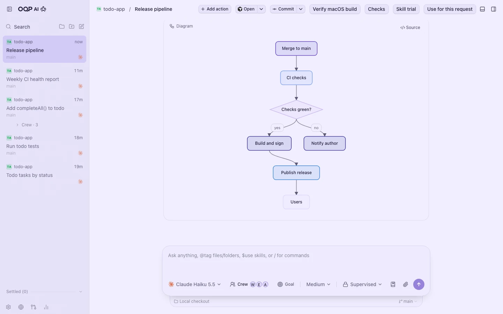
A release pipeline drawn as a flowchart inside the reply.답변 안에 흐름도로 그려진 릴리스 파이프라인.
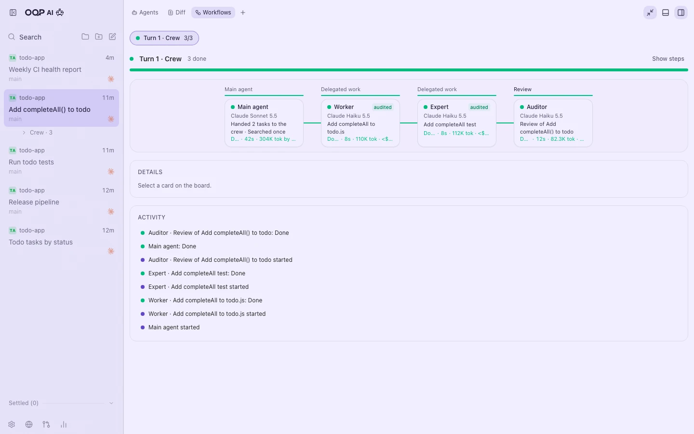
The Workflows panel: tool calls and subagents, live.워크플로 패널: 도구 호출과 서브에이전트를 실시간으로.
Plan. The agent decides what to do.계획. 에이전트가 할 일을 정합니다.
Search code and Read tests do not depend on each other, so they
run side by side.코드 검색과 테스트 읽기는 서로 의존하지 않으므로 나란히
실행됩니다.
Edit files waits for both.파일 수정은 둘이 모두 끝나야 시작합니다.
Run tests follows the edit.테스트 실행은 수정 뒤에 이어집니다.
Review comes last.검토가 마지막입니다.
Plan. The agent decides what to do.계획. 에이전트가 할 일을 정합니다.
Search code runs first.코드 검색이 먼저 실행됩니다.
Read tests waits in line, though it does not depend on the search.테스트 읽기는 검색에 의존하지 않지만 차례를 기다립니다.
Edit files starts once both are done.파일 수정은 둘이 끝나야 시작합니다.
Run tests follows the edit.테스트 실행은 수정 뒤에 이어집니다.
Review comes last.검토가 마지막입니다.
Illustrative workflow, not a recording. In the Workflows panel each tool call or
subagent is a card, and parallel work shares a column.예시 워크플로이며 녹화가 아닙니다. 워크플로 패널에서는 도구 호출과 서브에이전트가
각각 카드 하나이고, 병렬 작업은 같은 열에 놓입니다.
W1In the reply답변 안
Flowcharts on request요청하면 흐름도로
Ask for a pipeline, a decision flow or how the parts fit together, and get a
diagram instead of paragraphs.파이프라인, 의사결정 흐름, 구성 요소의 연결 방식을 물어보면 긴 글 대신 다이어그램을
받습니다.
W2Live실시간
One card per step단계마다 카드 하나
Each tool call, subagent or provider workflow is a card, and parallel work shares a
column. Select a card to see its model, timing and tokens.도구 호출, 서브에이전트, provider 워크플로가 각각 카드 하나이고, 병렬 작업은 같은
열에 놓입니다. 카드를 선택하면 모델, 소요 시간, 토큰을 볼 수 있습니다.
Right panel · mod+alt+w
W3Crew
Crew work shows up tooCrew의 작업도 함께
When Crew splits a task between models, the panel shows who is doing what.Crew가 모델들에게 작업을 나눠 맡기면, 패널에서 누가 무엇을 하는지 볼 수
있습니다.
08 · Phone휴대폰
Your desktop, from your phone.휴대폰에서 내 데스크톱으로.
Pair a phone or tablet browser with the computer that runs OOP and keep driving your
agents from anywhere in the house or beyond. The agents, files and logins stay on the
computer; the phone is a remote control that shows threads, sends messages and answers
approval prompts.휴대폰이나 태블릿 브라우저를 OOP가 실행되는 컴퓨터에 페어링하고, 어디서든 에이전트를
계속 조종하세요. 에이전트, 파일, 로그인은 컴퓨터에 남고, 휴대폰은 스레드를 보여 주고
메시지를 보내며 승인 프롬프트에 답하는 리모컨입니다.
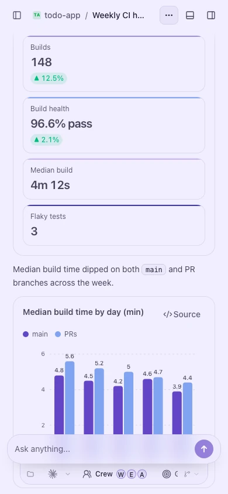
The same web UI in a phone browser.휴대폰 브라우저에서 보는 같은 웹 UI.
Open Connect mobileConnect mobile 열기Click the phone icon in the desktop sidebar. If mobile connections are off, click
Allow mobile connections; OOP restarts once.데스크톱 사이드바의 휴대폰 아이콘을 클릭합니다. 모바일 연결이 꺼져 있다면
Allow mobile connections를 누르세요. OOP가 한 번 재시작됩니다.
Scan the one-time QR code일회용 QR 코드 스캔Scan it with the phone camera and open the link in the phone browser. On the same
Wi-Fi, pick the LAN address.휴대폰 카메라로 스캔한 뒤 휴대폰 브라우저에서 링크를 엽니다. 같은 Wi-Fi라면
LAN 주소를 고르세요.
Keep driving your agents에이전트 계속 조종하기The paired phone is authorized for later visits. Away from home, use Tailscale
(Settings → Connections), or a Cloudflare relay you deploy yourself.페어링한 휴대폰은 이후 방문에도 승인됩니다. 집 밖에서는 Tailscale(설정 →
Connections)이나 직접 배포한 Cloudflare relay를 쓰세요.
The computer has to stay awake and running. Treat pairing links as passwords, and
use Supervised mode when controlling agents remotely. The web UI is checked at phone
size; the native iOS and Android apps and push notifications are untested by this
fork.컴퓨터는 켜져 있고 OOP가 실행 중이어야 합니다. 페어링 링크는 비밀번호처럼 다루고,
원격으로 에이전트를 조종할 때는 Supervised 모드를 쓰세요. 웹 UI는 휴대폰 크기에서
확인했으며, iOS·Android 네이티브 앱과 푸시 알림은 이 포크에서 검증하지
않았습니다.
How pairing works페어링 방식
Open Connect mobile in the desktop sidebar. If mobile connections are
off, allow them; OOP restarts once.데스크톱 사이드바에서 Connect mobile을 엽니다. 모바일 연결이 꺼져 있으면
허용하세요. OOP가 한 번 재시작됩니다.
Scan the one-time QR code with the phone camera and open the link in the
phone browser.휴대폰 카메라로 일회용 QR 코드를 스캔하고 휴대폰 브라우저에서 링크를
엽니다.
On the same Wi-Fi, pick the LAN address. A paired phone stays authorized
for later visits.같은 Wi-Fi에서는 LAN 주소를 고릅니다. 페어링한 휴대폰은 이후 방문에도
승인됩니다.
Away from home: use Tailscale, or a Cloudflare relay you deploy
yourself.집 밖에서는 Tailscale이나 직접 배포한 Cloudflare relay를 씁니다.
The agents, files and logins stay on the computer. The phone shows
threads, sends messages and answers approval prompts.에이전트, 파일, 로그인은 컴퓨터에 남습니다. 휴대폰은 스레드를 보여 주고
메시지를 보내며 승인 프롬프트에 답합니다.
The computer has to stay awake and running. Treat pairing links as
passwords.컴퓨터는 켜져 있고 실행 중이어야 합니다. 페어링 링크는 비밀번호처럼
다루세요.
09 · Screens화면
See it before you install it.설치하기 전에 먼저 둘러보세요.
All screenshots come from an isolated demo profile with no personal data.모든 스크린샷은 개인 정보가 없는 격리된 데모 프로필에서 찍었습니다.
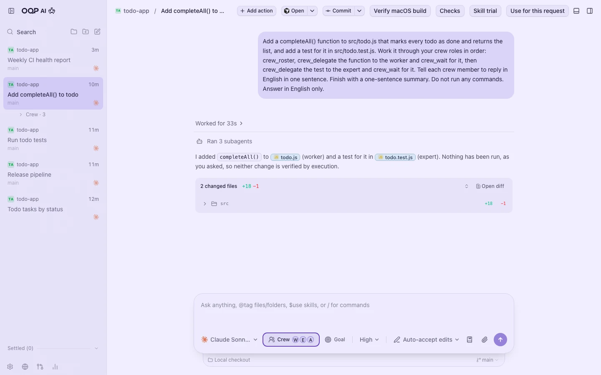
Pick a provider and model, set the permission mode, and follow the thread.provider와 모델을 고르고, 권한 모드를 설정한 뒤, 스레드를 따라가 보세요.
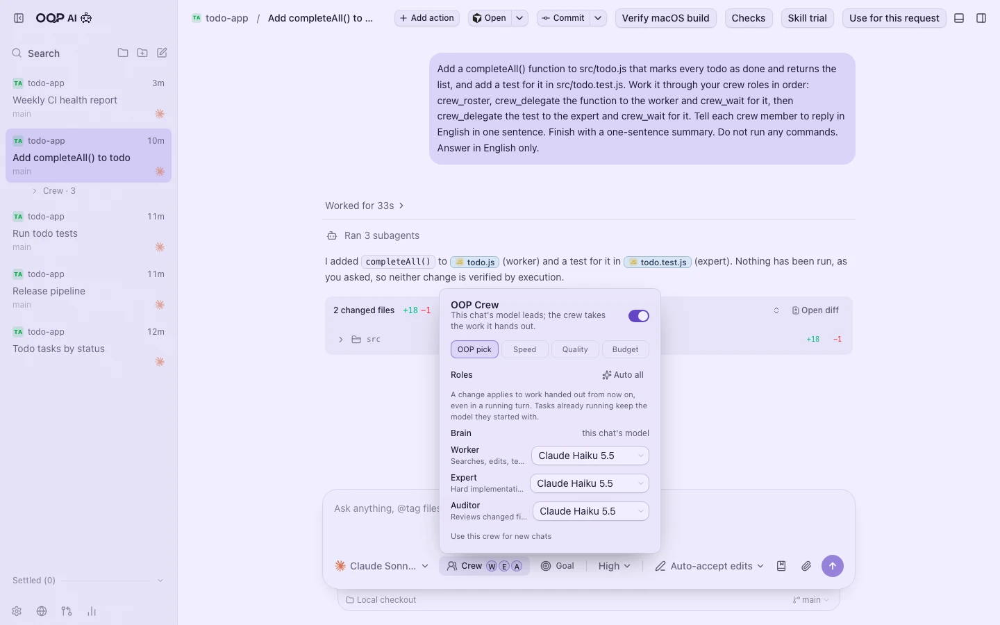
OOP Crew: one chat, several models, with a live board of who is doing what.OOP Crew: 한 채팅에서 여러 모델이 일하고, 누가 무엇을 하는지 실시간 보드로
확인합니다.
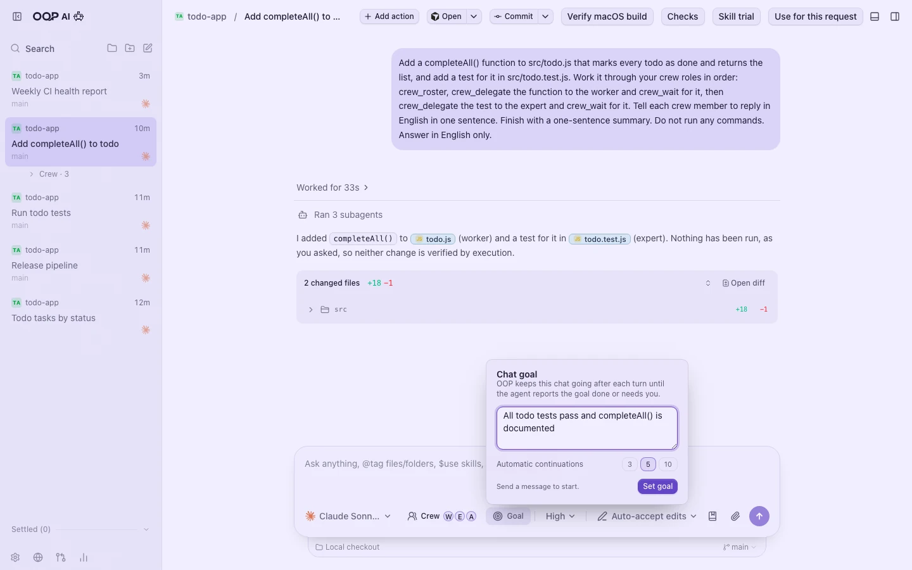
Thread goal: the chat keeps going until the goal is done, blocked or stopped.스레드 목표: 목표가 완료·차단·중지될 때까지 채팅이 계속됩니다.
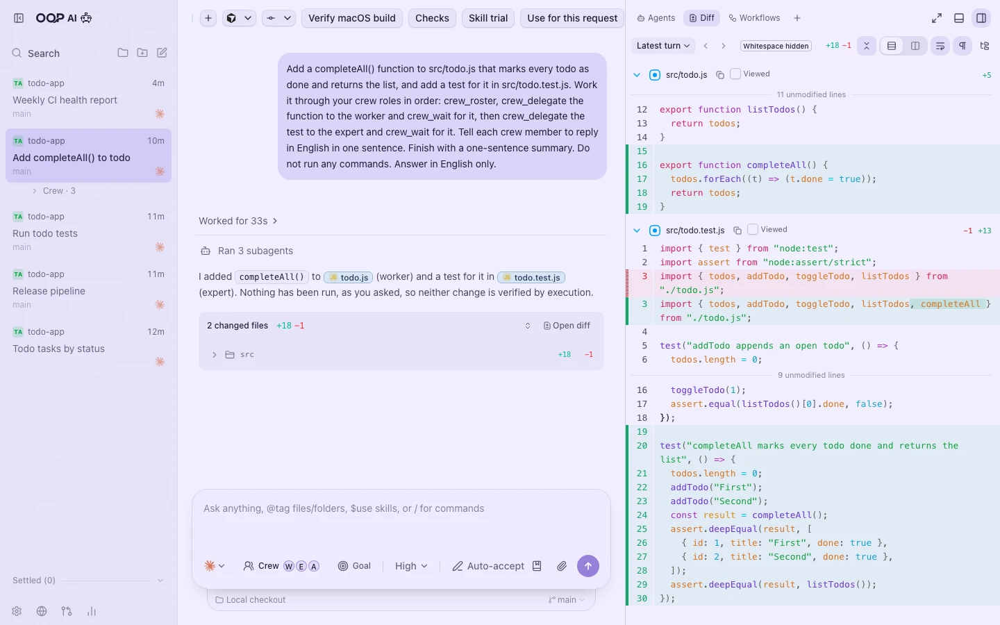
Diff panel: review the agent's changes and restore from a checkpoint.diff 패널: 에이전트의 변경을 검토하고 체크포인트에서 복원합니다.Workflows: a live diagram of tool calls and subagents.워크플로: 도구 호출과 서브에이전트의 실시간 다이어그램.
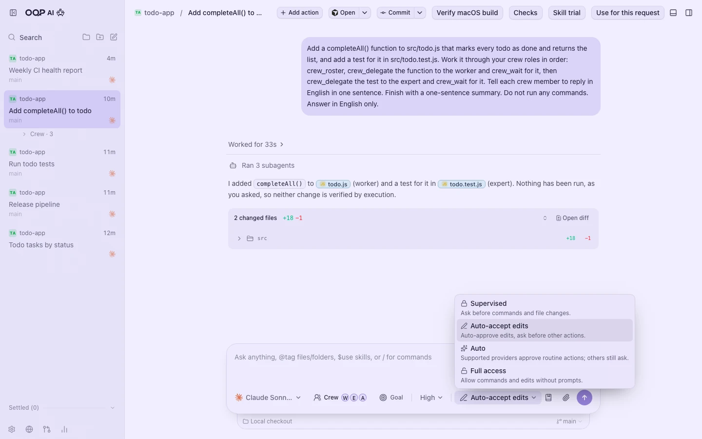
Permission modes: from Supervised to Full access.권한 모드: Supervised부터 Full access까지.
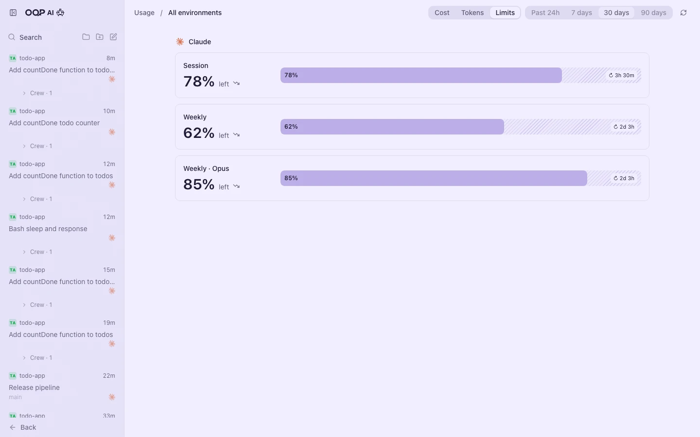
Usage: token and estimated cost history per provider.사용량: provider별 토큰과 추정 비용 기록.
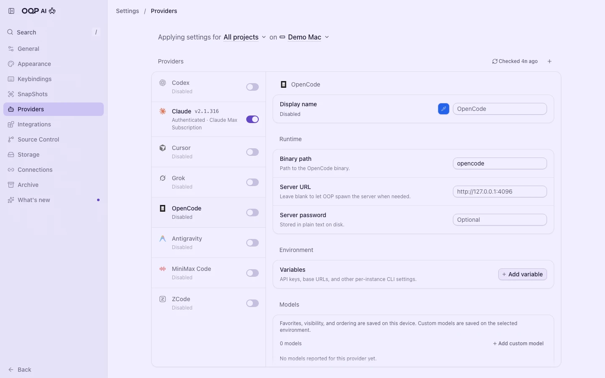
Settings → Providers: install, update and sign in to each provider.설정 → Providers: 각 provider를 설치, 업데이트하고 로그인합니다.
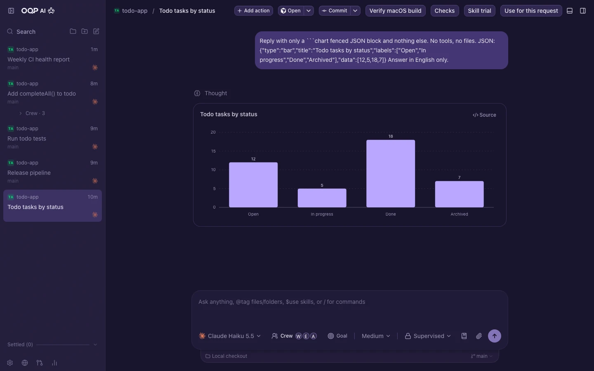
The dark theme.다크 테마.The web client at phone size, paired to a desktop host.데스크톱 호스트에 페어링한 휴대폰 크기의 웹 클라이언트.
10 · Install설치
One command. Checked before it installs.명령 한 줄. 설치 전에 검증합니다.
The installer downloads the desktop app from a GitHub release and verifies its
SHA-256 before installing. It needs no Node.js, pnpm, git or compiler.설치 스크립트는 GitHub 릴리스에서 데스크톱 앱을 내려받아 설치 전에 SHA-256을
검증합니다. Node.js, pnpm, git, 컴파일러가 필요 없습니다.
macOS · Apple Silicontested검증됨
curl -fsSL https://raw.githubusercontent.com/AIBeginnerX/oh-our-pi-desktop/main/scripts/install-desktop.sh | sh
Installs ~/Applications/OOP.app (an existing
/Applications/OOP.app is updated in place). Remove the app to
uninstall. The app is not notarized: if macOS warns, right-click it and choose
Open, or use System Settings → Privacy & Security →
Open Anyway.~/Applications/OOP.app에 설치합니다(기존
/Applications/OOP.app이 있으면 그 앱을 갱신). 삭제하려면 앱을 지우면
됩니다. 앱은 공증(notarize)되지 않았으므로 macOS가 경고하면 앱을 우클릭해
열기를 고르거나, 시스템 설정 → 개인정보 보호 및 보안 → 그래도 열기를
쓰세요.
Terminal app only (no desktop app)터미널 앱만 (데스크톱 앱 없이)tested검증됨
curl -fsSL https://raw.githubusercontent.com/AIBeginnerX/oh-our-pi-desktop/main/scripts/install-terminal.sh | sh
Installs the oop command, its own background server and a private copy
of Node.js under ~/.local/share/oop-terminal and
~/.local/bin/oop. No Node, pnpm or git needed. If oop is
not found, the installer prints the line to add to your PATH. Then sign
in to a provider CLI and run oop. The installer ends by running
oop doctor once, so you see which providers are ready and what is still
missing. To update, run it again and then oop stop; to uninstall, run
oop stop and delete those two locations. Intel Macs are not
supported.oop 명령과 전용 백그라운드 서버, 전용 Node.js 사본을
~/.local/share/oop-terminal과 ~/.local/bin/oop에
설치합니다. Node, pnpm, git이 필요 없습니다. oop을 찾지 못하면
PATH에 추가할 줄을 알려 줍니다. 그다음 provider CLI에 로그인하고
oop을 실행하세요. 설치 스크립트는 마지막에 oop doctor를 한
번 실행해 준비된 provider와 아직 빠진 것을 보여 줍니다. 업데이트는 다시 실행한 뒤
oop stop, 삭제는 oop stop 후 위 두 위치를 지우면 됩니다.
Intel Mac은 지원하지 않습니다.
Run in PowerShell. Silent per-user install with a Start menu entry; uninstall from
Settings → Apps. Windows SmartScreen may warn: click More info →
Run anyway. The Windows installer was built by the maintainer and is not yet
verified on clean machines.PowerShell에서 실행하세요. 사용자 단위 무음 설치이며 시작 메뉴에 등록됩니다. 삭제는
설정 → 앱에서 합니다. SmartScreen이 경고하면 추가 정보 → 실행을
누르세요. Windows 설치 파일은 개발자가 빌드했으며 깨끗한 환경에서는 아직 검증되지
않았습니다.
Terminal app only (no desktop app)터미널 앱만 (데스크톱 앱 없이)not verified미검증
Run in PowerShell, Windows x64 only. Installs oop.cmd and a private
copy of Node.js under %LOCALAPPDATA%\oop-terminal; no Node, pnpm or git
needed. If oop is not found, the installer prints the command that adds
the folder to your user PATH. The installer ends by running
oop doctor once, so you see which providers are ready and what is still
missing. Run oop stop before updating, because Windows does not replace
files in use. To uninstall, run oop stop and delete that folder.
Windows on ARM is not supported. Not yet verified on a real Windows machine.PowerShell에서 실행하세요(Windows x64만 지원). oop.cmd와 전용 Node.js
사본을 %LOCALAPPDATA%\oop-terminal에 설치하며 Node, pnpm, git이 필요
없습니다. oop을 찾지 못하면 사용자 PATH에 폴더를 추가하는
명령을 알려 줍니다. 설치 스크립트는 마지막에 oop doctor를 한 번 실행해
준비된 provider와 아직 빠진 것을 보여 줍니다. 사용 중인 파일은 Windows가 바꾸지
못하므로 업데이트 전에 oop stop을 실행하세요. 삭제는
oop stop 후 그 폴더를 지우면 됩니다. Windows on ARM은 지원하지
않습니다. 실제 Windows 컴퓨터에서는 아직 검증되지 않았습니다.
Linux · x64not verified미검증
curl -fsSL https://raw.githubusercontent.com/AIBeginnerX/oh-our-pi-desktop/main/scripts/install-desktop.sh | sh
Installs an AppImage under ~/.local/share/oop-desktop, a launcher at
~/.local/bin/oop-desktop and a menu entry. It needs GTK and NSS runtime
libraries. The Linux GUI has not been verified.AppImage를 ~/.local/share/oop-desktop에, 실행 파일을
~/.local/bin/oop-desktop에, 메뉴 항목을 함께 설치합니다. GTK와 NSS
런타임 라이브러리가 필요하며, Linux GUI는 아직 검증되지 않았습니다.
Terminal app only (no desktop app)터미널 앱만 (데스크톱 앱 없이)not verified미검증
curl -fsSL https://raw.githubusercontent.com/AIBeginnerX/oh-our-pi-desktop/main/scripts/install-terminal.sh | sh
x64 and arm64, glibc distributions only (it needs libatomic1; Alpine
is not supported). Installs the oop command, its own background server
and a private copy of Node.js under ~/.local/share/oop-terminal and
~/.local/bin/oop. No Node, pnpm or git needed. Then sign in to a
provider CLI and run oop. The installer ends by running
oop doctor once, so you see which providers are ready and what is still
missing. To update, run it again and then oop stop; to uninstall, run
oop stop and delete those two locations. Not yet verified on a real
Linux machine.x64와 arm64, glibc 배포판만 지원합니다(libatomic1 필요, Alpine은
미지원). oop 명령과 전용 백그라운드 서버, 전용 Node.js 사본을
~/.local/share/oop-terminal과 ~/.local/bin/oop에 설치하며
Node, pnpm, git이 필요 없습니다. 그다음 provider CLI에 로그인하고 oop을
실행하세요. 설치 스크립트는 마지막에 oop doctor를 한 번 실행해 준비된
provider와 아직 빠진 것을 보여 줍니다. 업데이트는 다시 실행한 뒤
oop stop, 삭제는 oop stop 후 위 두 위치를 지우면 됩니다.
실제 Linux 컴퓨터에서는 아직 검증되지 않았습니다.
Build it yourself (macOS Apple Silicon)직접 빌드 (macOS Apple Silicon)Node 24.x · pnpm 11.10.0 · gitNode 24.x · pnpm 11.10.0 · git
git clone https://github.com/AIBeginnerX/oh-our-pi-desktop.git
cd oh-our-pi-desktop
node scripts/macos.mjs doctor
node scripts/macos.mjs setup
node scripts/macos.mjs package
Run the script with node, not through pnpm.
package writes an ad hoc signed DMG to release/macos/.
Windows and generic dev paths are in the
README.스크립트는 pnpm이 아니라 node로 직접 실행하세요.
package는 ad hoc 서명된 DMG를 release/macos/에 만듭니다.
Windows와 일반 개발 경로는
README를 참고하세요.
To update later, quit OOP and rerun the same command; your data is kept. See
Releases and the
install guide.나중에 업데이트하려면 OOP를 종료하고 같은 명령을 다시 실행하면 되며 데이터는
유지됩니다.
Releases와
설치 안내를 참고하세요.
What the installer does설치 스크립트가 하는 일
Download the app from a GitHub release.GitHub 릴리스에서 앱을 내려받습니다.
Verify its SHA-256 against the checksum file of the release.릴리스의 체크섬 파일과 대조해 SHA-256을 검증합니다.
Install. The new app is copied in; if that fails, the previous app is
put back.설치. 새 앱을 복사해 넣고, 실패하면 이전 앱을 되돌려 놓습니다.
Add oop on macOS and Windows. Then open the app.macOS와 Windows에서는 oop 명령을 추가합니다. 그다음 앱을
엽니다.
Download the app from a GitHub release.GitHub 릴리스에서 앱을 내려받습니다.
Verify its SHA-256 against the checksum file of the release.릴리스의 체크섬 파일과 대조해 SHA-256을 검증합니다.
The checksum differs: the installer stops and nothing is
installed.체크섬이 다르면 설치 스크립트가 멈추고 아무것도 설치하지 않습니다.
Steps of the one-line installer. Shown here for macOS; Windows verifies the same
way.한 줄 설치 스크립트의 단계입니다. macOS 기준이며 Windows도 같은 방식으로
검증합니다.
The terminal command터미널 명령
On macOS and Windows the installer also adds an oop command (macOS:
~/.local/bin; Windows: %LOCALAPPDATA%\oop-terminal), unless
an oop that OOP did not write is already there. Open a new terminal and
run it in a project folder. Already installed? The in-app update does not add
the command, so run the installer once more.macOS와 Windows에서는 설치 스크립트가 oop 명령도 함께 설치합니다(macOS는
~/.local/bin, Windows는 %LOCALAPPDATA%\oop-terminal). OOP가
만들지 않은 oop가 이미 있으면 건드리지 않습니다. 새 터미널을 열고
프로젝트 폴더에서 실행하세요. 이미 설치했다면 앱 안의 업데이트는 이 명령을
추가하지 않으므로 설치 스크립트를 한 번 더 실행하세요.
cd your-project && oop
After installing설치한 뒤에
Install and sign in to one provider CLI (the desktop installer does not do
this for you). Settings → Providers shows the state.provider CLI 하나를 설치하고 로그인하세요(데스크톱 설치 스크립트가 대신해
주지 않습니다). 상태는 설정 → Providers에서 볼 수 있습니다.
Add a project folder, ideally a git repository, and start a thread.프로젝트 폴더(가능하면 git 저장소)를 추가하고 스레드를 시작합니다.
Pick a model and a permission mode in the composer, then send a message.작성창에서 모델과 권한 모드를 고르고 메시지를 보냅니다.
Review the result in the diff panel.diff 패널에서 결과를 검토합니다.
Codexcodex login
Claude Codeclaude auth login
Cursoragent login
Grok Buildgrok login
OpenCodeopencode auth login
Read the code. Report what breaks.코드를 읽어 보세요. 문제는 이슈로 알려 주세요.
OOP is MIT licensed and developed in the open. Issues are welcome; please never
include secrets, pairing links or personal paths.OOP는 MIT 라이선스로 공개되어 있습니다. 이슈는 언제든 환영하지만, 비밀 값, 페어링
링크, 개인 경로는 절대 올리지 마세요.
Early, local, and clear about it.초기 단계, 로컬 실행, 그리고 솔직하게.
Platform support플랫폼 지원
Platform플랫폼
Status상태
macOS · Apple Silicon
tested검증됨The main target.주요 대상입니다.
Windows · x64
experimental실험적Built by the maintainer; not verified on clean machines.개발자가 빌드했으며 깨끗한 환경에서는 검증되지 않았습니다.
macOS · Intel, Linux
untested미검증No promises.보장하지 않습니다.
Phone browser휴대폰 브라우저
checked확인됨Web UI checked at phone size. The native iOS and Android apps are untested by
this fork.웹 UI를 휴대폰 크기에서 확인했습니다. iOS·Android 네이티브 앱은 이 포크에서
검증하지 않았습니다.
Who is OOP for?누구를 위한 앱인가요?
Developers who already pay for one or more coding-agent subscriptions or API plans,
can accept an early, unsigned desktop app, and want one control surface. If you want
a polished, signed, auto-updating product, the upstream T3 Code is the better fit
today.이미 코딩 에이전트 구독이나 API 요금제를 쓰고 있고, 초기 단계의 서명되지 않은
데스크톱 앱을 감수할 수 있으며, 하나의 제어 화면을 원하는 개발자를 위한 앱입니다.
서명되고 자동 업데이트되는 완성형 제품을 원하신다면 현재로서는 업스트림 T3 Code가 더
잘 맞습니다.
Can I use OOP from a terminal?터미널에서도 쓸 수 있나요?
Yes. Run oop: it shares threads with the desktop app and starts its
own background server if the app is closed. It needs desktop 0.0.129 or newer, and
its language follows your locale (English unless it starts with ko);
oop config set language en|ko sets it. See
Terminal.네. oop을 실행하면 됩니다. 데스크톱 앱과 스레드를 공유하고, 앱이 꺼져
있으면 자체 백그라운드 서버를 띄웁니다. 데스크톱 0.0.129 이상이 필요하고 화면 언어는
로캘을 따르며(ko로 시작하지 않으면 영어)
oop config set language en|ko로 정합니다.
터미널을 참고하세요.
What does it cost?비용은 얼마인가요?
OOP itself is free and MIT licensed. Every provider uses your own subscription or
API credit, and Crew multiplies usage by running several models per chat. The Usage
page shows estimates, not your bill.OOP 자체는 무료이며 MIT 라이선스입니다. 모든 provider는 내 구독이나 API 크레딧을
쓰고, Crew는 채팅 하나에서 여러 모델을 돌리므로 사용량이 늘어납니다. 사용량 페이지는
청구액이 아닌 추정치를 보여 줍니다.
Is it safe to let agents run?에이전트를 실행해도 안전한가요?
Agents run with your account's permissions and can edit files and run commands. New
threads default to Full access. For untrusted repositories, switch to Supervised
(Settings → General → New threads). Treat pairing links as passwords and prefer
Tailscale away from home.에이전트는 내 계정의 권한으로 실행되어 파일을 수정하고 명령을 실행할 수 있습니다.
새 스레드의 기본값은 Full access이므로, 믿을 수 없는 저장소에서는 Supervised로
바꾸세요(설정 → General → New threads). 페어링 링크는 비밀번호처럼 다루고, 집
밖에서는 Tailscale을 권장합니다.
Does OOP collect telemetry?텔레메트리를 수집하나요?
OOP has no servers and the maintainers receive nothing from your app. The anonymous
usage reporter inherited from upstream is off by default and needs your own project
key to turn on.OOP에는 서버가 없고 개발자는 앱에서 아무것도 받지 않습니다. 업스트림에서 물려받은
익명 사용 통계 보고기는 기본으로 꺼져 있고, 켜려면 직접 발급한 프로젝트 키가
필요합니다.